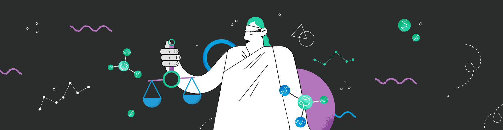
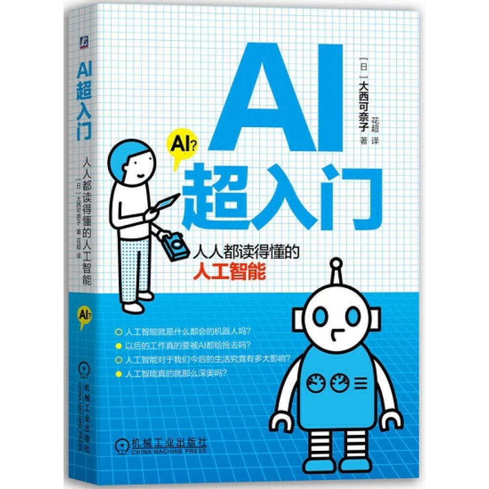

首先我们需要解释一个问题：
为什么设计师要学习AI？
对于设计师是否需要了解AI知识，在过去的调研中，有两种观点：
——‘It Is Not Always Discovery Time’: Four Pragmatic Approaches in Designing AI Systems
——Investigating How Experienced UX Designers Effectively Work with Machine Learning
我认为设计师的角色是没有变化的，依旧是人与技术连接的桥梁。但是了解这些新的知识可以为我们提供一个新的看待产品的视角，有很多曾经没有设想过的细节设计，这些让我觉得备受启发。
其实设计师确实并不是了解更多AI知识就越有价值，而是从设计师的角度，能把AI或者其他技术理解并运用创造有价值的产品，来帮助解决问题，再或者帮助评估AI方案对人们生活的影响。
所以我们应该更好地理解涉及人工智能的设计过程，以及设计师利用人工智能提供的机会的方式。

如果你对AI感兴趣，想更多了解它，下面是我觉得有帮助的资料：
你可以在下面的网站/书籍中探索
什么是AI？
📖 AI超入门：人人都读得懂的人工智能
这是在图书馆发现的一本书，分上下两篇。上篇是认识AI，讲述AI的基础知识，包括AI的强项与弱项，AI的历史，机器学习，深度学习，AI的学习过程等。下篇是AI对各行业的影响。作者会对每一个概念举一个比喻的事物来方便理解。
适合快速理解。

为设计师的工具：

设计案例
在这里可以看过很多AI创新的案例，或许可以帮助你理解AI的趣味和价值：
试一试运行AI
💻 Microsoft Training
微软的学习平台，提供了入门学习路径，在这里可以寻找到机器学习有关的讲解和练习，还可以使用Azure进行实践。
一些课程如：
- Azure AI 基础知识：人工智能入门
- 在 Azure 机器学习中使用自动化机器学习